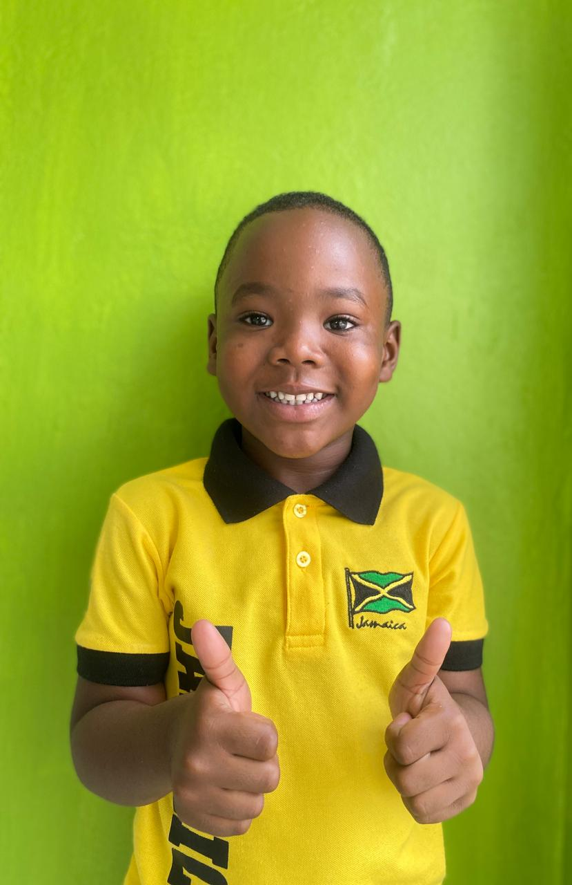

A driven and proficient Software Engineering Student and UI Developer
CSS to Success
by Shequan McCalla

I love learning how to develop websites, and turning ideas into usable interfaces feels amazing.
With HTML I structure content clearly, and with CSS I bring it to life by using Grid/Flexbox,
thoughtful spacing, and clean typography until it clicks. I’ve learned to build sites locally and push them to GitHub,
where I create branches to experiment, write clear commit messages, open pull requests,
and learn from every merge or revert. Tracking my progress in the commit history keeps me disciplined,
and pushing changes feels like shipping small releases. Every page I build teaches me something new about performance,
patience, process, and design, one commit at a time.
Smile Chronicles
by Shae Denlinson
Smiling is a tiny habit with an outsized payoff. It signals “you’re safe” to your brain, loosens the tension in your shoulders,
and makes it easier for people around you to connect with you. We’re wired to mirror each other, so your smile often invites one back...
suddenly the room feels warmer, the conversation flows, and small problems feel smaller. This isn’t about pretending everything is perfect;
it’s about choosing a gentle reset in the middle of real life. Try it when you open your laptop, step outside, or greet a friend...
one simple smile can turn an ordinary moment into a better one, and those moments add up.